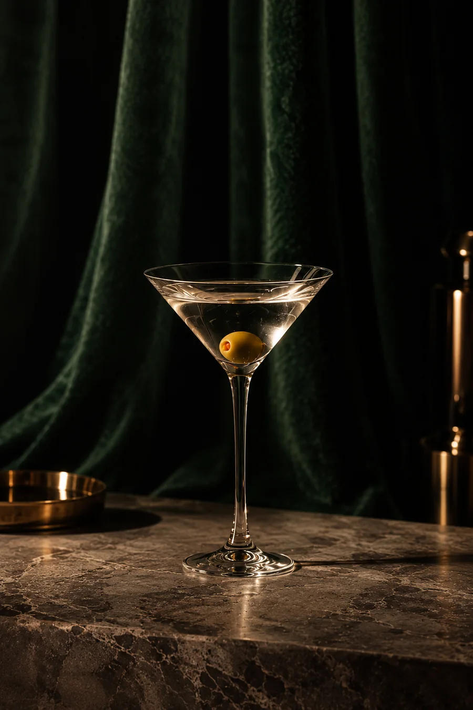
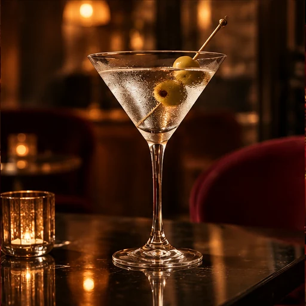

N°01 / SIGNATURE
N°01 / SIGNATUREVelvet Hour
€16Rye · vermouth rosso · cherry bitters
AMARENA CHERRY / THE HOUSE MANHATTAN
cocktails at dusk — dancing until dawn
A PLACE BETWEEN
DAY & NIGHT
A house for long pours, low voices and nights that end in the morning. Come for one drink. Stay for the feeling.
READ THE ROOM ↗

POURED WITH INTENTION
Eight house recipes, built slowly behind a copper bar. Seasonal fruit, house bitters and spirits.
N°01 / SIGNATURERye · vermouth rosso · cherry bitters
AMARENA CHERRY / THE HOUSE MANHATTAN N°02 / SIGNATURE
N°02 / SIGNATUREVodka · cold brew · cacao nib · salt
VELVET CREMA / A LITTLE AFTER DARKN°03 / SIGNATURESingle malt · smoked demerara · orange oil
OAK SMOKE / SLOWLY STIRREDN°04 / SIGNATUREGin · hibiscus · pomegranate · lime
BRIGHT FRUIT / A DARK LITTLE SECRETN°05 / SIGNATUREChampagne · elderflower · poached pear
LEMON ZEST / A NIGHTCAP IN THE MAKING
N°06 / SIGNATUREVodka · olive brine · sea salt · dill
THE HOUSE MARTINI / EXTRA COLDTWO FLOORS. ONE MOOD.
Two floors under one low ceiling. Upstairs, a listening bar in walnut and brass. Downstairs, a velvet-walled club built around a hand-tuned sound system.

OCTOBER PROGRAMME
23:00 – 04:00 · Deep house · Resident Marlo Vey
20:00 – 01:00 · Live quartet · Seated
23:00 – 04:00 · Disco & edits
21:00 – 02:00 · Vinyl only · Seated
22:00 – 05:00 · Black tie · Masks
18:00 – 00:00 · Soul · Aperitivo
“The kind of place you walk into for one drink and leave when the birds start singing.”
— NIGHTLIFE JOURNAL, AUTUMN 2026
MAKE THE NIGHT YOURS
Buy-outs for 40 to 280 guests. Dinners in the listening bar, launches on the club floor, after-parties that end with breakfast.
ENQUIRE NOW ↗YOUR NIGHT, YOUR HOUSE.RESERVATIONS · PRIVATE HIRE · GUEST LIST
Reservations are answered by a human, within the hour, from 16:00 to 02:00.
Carrer del Rec 42
08003 Barcelona
Bar · Wed – Sun · 19:00 – 02:00
Club · Fri – Sat · 23:00 – 04:00
Dress with intent. 18+.
No photos on the club floor.